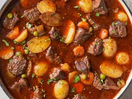

Stew Recipie

Below is a Recipie that will forever cahnge your outlook on life you will forever be a better person
Ingredients
- Beef Potjies
- Tomato
- Onions
- Worster sauce
- Beef cube
- Carrots
Steps
- Prepare the Ingredients:
Dice the onions, carrots, and tomatoes.
Crumble the beef cube into a small bowl for later use.
- Preheat the Potjie Pot:
Place your potjie pot over medium heat on an open flame or stovetop.
Add a bit of oil or butter to prevent sticking.
- Brown the Beef:
Add the beef chunks to the pot and brown them on all sides. This helps seal in the flavor.
- Add Onions and Carrots:
Toss in the onions and carrots. Sauté them with the beef for 5–7 minutes until softened.
- Incorporate the Tomatoes:
Stir in the diced tomatoes. Let them cook down to form a rich base for about 10 minutes.
- Season and Add Beef Cube:
Add the crumbled beef cube and stir well. This will enhance the depth of the flavors.
- Pour in Worcestershire Sauce:
Add a generous splash of Worcestershire sauce (adjust to taste). Stir to coat all the ingredients.
- Simmer Slowly:
Lower the heat and cover the pot. Let it simmer gently for about 1.5–2 hours, stirring occasionally to prevent sticking.
- Check and Adjust:
Periodically check the potjie. If it's too dry, add a splash of water or beef stock. Taste and adjust seasoning if needed.
- Serve and Enjoy:
Once the beef is tender and flavors are well combined, serve your Beef Potjie hot with rice, bread, or pap (traditional South African porridge).
Home